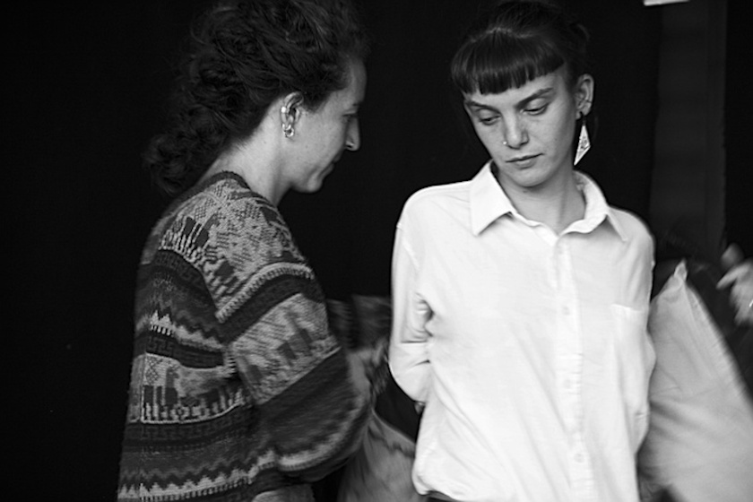

EAU-FORTE, nom féminin :
Procédé de gravure en taille-douce. Sur une plaque de métal, l’artiste dessine son motif à la pointe
métallique. La plaque est ensuite placée dans un bain d’acide qui « mord » les zones à découvert et
laisse intactes les parties protégées par une fine couche de vernis. L’acide nitrique « aqua fortis »,
utilisé à l’origine par les alchimistes, a été doucement remplacé par des mordants moins toxiques comme
le perchlorure de fer. L’artiste ayant recours aux procédés d’eaux-fortes, à l’aquatinte, à la gravure
au lavis ou la manière crayon est appelé aquafortiste.
Ana vit pour la gravure et Lou, volatile, est représentante de commerce pour une coopérative
internationale d’artisans papetiers. Se rencontrant autour d’une passion commune pour la taille-douce, les
deux femmes partagent des moments de vie, de travail, donnent à voir l’atelier dans sa plus vive intimité.
Quand sa défunte amie laisse derrière elle un cuivre gravé sans avoir pu le passer sous presse, Lou s’aventure
sur la table à encrage pour le tirage d’une émouvante épreuve d’artiste. Au fil d’une initiation sensible aux
techniques d’impression, elle invite à une exploration poétique du monde de l’estampe.
“LOU Souvent, je t’attendais, je faisais tiédir un peu d’eau pour quand tu viendrais te laver les mains. J’ai aimé au fil des rencontres relever les yeux du papier, regarder les oiseaux passer, scruter les ciels, partager des balades, tes engagements, tes petits déjeuners, et rêver de voyages, voir le monde changer.”
“ANA Parmi les graminées tournent les ailes d’un moulin. Des bestioles courent sur des parois de pierres. Je crois que c’était le petit matin. Le paysage avait comme la couleur du souvenir pourtant je crois que de ma vie, je n’y ai jamais mis les pieds. On aurait dit que c’était toi, que le paysage s’appelait Lou.”
Une résidence de création en immersion dans les paysages de la gravure
Dans le cadre du dispositif La Fabrique, la Compagnie Lunée l’Ôtre est invitée par le
Musée de l’Imprimerie et de la Communication
Graphique de Lyon à donner vie aux collections permanentes du Musée pour une résidence de création théâtrale.
Pendant six semaines, du 6 octobre au 14 novembre 2020, l'équipe répétera le spectacle Ancrage, immergeant les spectateur.trice.s dans l’intimité des techniques
de gravures en taille-douce.
D’ateliers en rencontres publiques, elles partageront le regard sensible et poétique qu’elles posent sur les procédés d’impressions.
S’appuyant sur des récits d’artistes et d’artisans, explorant les gestes et la langue propres aux arts de l’estampe et de la papeterie, elles
s’abandonnent à une fiction qui met en scène la trajectoire de deux femmes cheminant un moment ensemble entre les cuivres et les papiers.
Spectacle tout public - Durée 1h20
Texte & Mise en scène Malvina Migné
Jeu Louise Foret, Camille Varenne